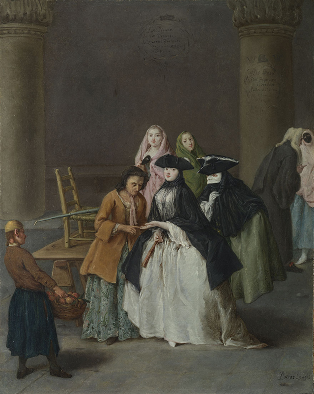
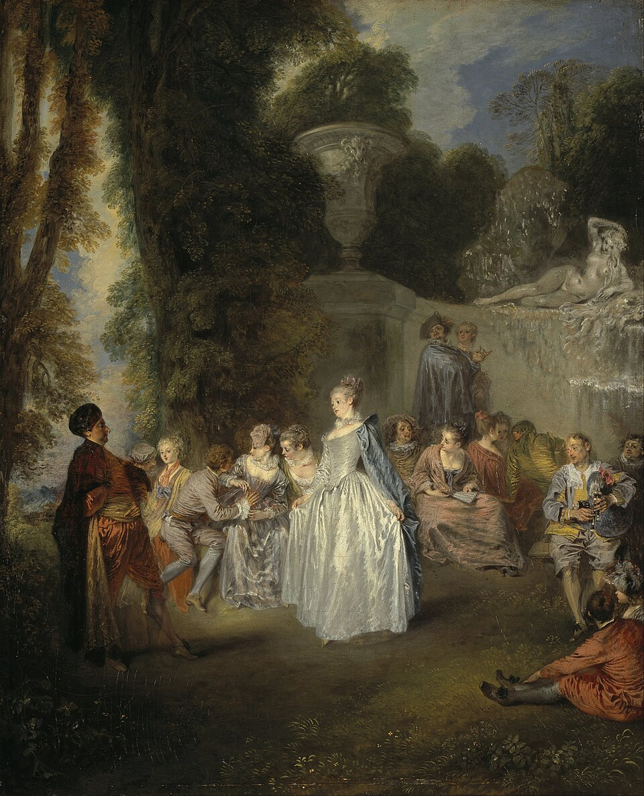
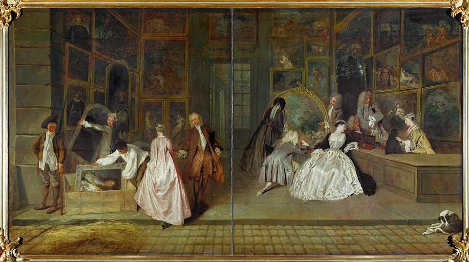

Section 2: One-Way Functions and Derandomization
Nicolas Lancret, c. 1730
One-way functions have been a recurring background character throughout the entire course, but they've mostly been introduced as black-box tools that make random proofs from across the field possible. In this section, we (finally) formally define one-way functions and use the cryptographic tools from the first section to (finally) meaningfully connect them directly to derandomization results.
The major theorem of this section (and of the site in general) is the HILL Theorem (Håstad, Impagliazzo, Levin, and Luby, 1999), which states that one-way functions exist if and only if pseudorandom generators exist. We'll introduce smaller theorems along the way that help put this result into context. As for the proof of the theorem itself, we prove the backward direction (PRG ⟹ OWF) in full, while we restrict the forward direction to a specific type of one-way functions; the reason why will become clear.
1. One-Way Functions
Jean-Honoré Fragonard, 1771–72
Definition
A one-way function (OWF) is a function that has the property of being computationally difficult for an efficient adversary to invert: given an OWF output, the probability that the adversary will be able to find any input that matches this output is negligible. More formally:
- \(f\) is computable by a polynomial-time algorithm, and
- for every efficient adversary \(A\) (a polynomial-size circuit family, Section 1, §2), \(\displaystyle\Pr_{x\leftarrow\bits^n}\big[f(A(f(x)))=f(x)\big]\) is negligible in \(n\).
Here are some key points to keep in mind:
- “Find some preimage,” not “find \(x\)”. \(A\) succeeds if it outputs any \(x'\) with \(f(x')=f(x)\). If success meant recovering \(x\) itself, a constant function \(f(x)=1\) would count as “one-way”: you can never tell which \(x\) was used, even though inverting it is trivial.
- Average case, not worst case. \(f\) must be hard to invert on a random input. NP-hardness, which you may think has a similar definition to OWFs in that there is a certificate (the input), is a worst-case notion (“some instance is hard”), which is useless for cryptography, where we need almost every key to be secure (in NP it is sufficient for one instance to not be computable in poly time). This is why we assume OWFs instead of just \(\Pclass\ne\NP\).
- The limits on how hard \(f\) can be. Inverting can't be easier than evaluating \(f\), and brute force over all \(2^n\) inputs always works. So the possible security levels lie between those two extremes.
While no true one-way functions have been found, the closest functions we are aware of are factoring and modular logarithm, which you may be familiar with from other classes.
Throughout the rest of the proofs, OWFs, like PRGs, will usually take both a public and private input, like \(f(x,r)\). This works the same as with PRGs; it's still an OWF, just with multiple logical inputs merged into one actual input.
OWF Special Cases
For all the proofs we're interested in, the less structured the output of the OWF gets, the harder the proof gets. The general definition for OWFs above gives little structure other than that it preserves enough randomness to foil adversaries. With the following special cases of OWFs, we'll be able to work up to harder and harder versions of the theorem.
Important note: when \(X\) is uniform, \(f(X)\) (\(=\) the entire codomain) is also exactly uniform. This is the key fact that makes studying one-way permutations easy.
Important note: All the bits of randomness are preserved, but \(f\) is no longer uniform over the entire codomain; only on its image.
2. PRGs exist ⟹ OWFs exist
Jean-Honoré Fragonard, 1771–73
Proof
This proof will follow the traditional, non-hybrid security reduction proof technique outlined in Section 1.
Define the distinguisher \(B(y)\): compute \(s'=A(y)\), and output 1 iff \(G(s')=y\). \(B\) is efficient because \(A\) and \(G\) are.
- Experiment 0 (\(y=G(s)\)): \(B\) outputs 1 exactly when \(A\) inverts successfully, so \(\Pr[W_0]=p(n)\).
- Experiment 1 (\(y\) uniform in \(\bits^{\ell}\)): \(B\) can output 1 only if \(y\in\mathrm{Im}(G)\), and \(|\mathrm{Im}(G)|\le 2^n\). So \(\Pr[W_1]\le 2^{n-\ell}\le 2^{-n}\).
Advantage: \(\mathrm{PRGadv}[B,G]=\Pr[W_0]-\Pr[W_1]\ge p(n)-2^{-n}\).
Since \(p(n)\) is non-negligible, this is a non-negligible advantage. Therefore, we have successfully distinguished \(G\) from truly random bits in the PRG attack game. This completes the contrapositive proof. ∎
Why \(\ell\ge 2n\)? With only \(\ell = n+1\), the bound on \(\Pr[W_1]\) is \(1/2\), and \(p(n)-1/2\) could be negative. Stretching first avoids this.
3. “Hardcore Bits”
Jean-Honoré Fragonard, early 1770s
Motivation and Definition
In order to tackle the forward direction, we'll need a couple more tools in our toolkit than just simple attack game proof techniques.
Right now, there's a glaring flaw in our understanding of OWFs. OWFs promise that the input \(x\) is hard to recover as a whole; it makes no guarantees about adversaries being able to reconstruct individual bits or groups of bits of \(x\). For example, if \(f'\) is one-way, so is \(f(x_1,x_2)=(x_1,f'(x_2))\), where \(x_1,x_2\) are the two halves of \(x\). Yet \(f(x)\) reveals the whole first half of \(x\).
So our first step will be to prove that there is some bit computable from an OWF output that is completely unpredictable to adversaries. We'll call this bit a hardcore bit.
Proof Strategies for Prediction
This definition is a bit (hah) different from the attack games we've seen so far: usually the attack games force the adversary to distinguish between two experiments, but here we're asking the adversary to generate a bit and see whether it matches. As you'll see below, these two settings are equivalent.
- (a) From a predictor with prediction advantage \(\varepsilon\), we get a distinguisher with \(\Pr[W_0]-\Pr[W_1]=\varepsilon\).
- (b) From a distinguisher with \(\Pr[W_0]-\Pr[W_1]=\varepsilon\), we get a predictor with prediction advantage \(\varepsilon\).
(a) Given predictor \(P\), let \(D(y,c)=1\) iff \(P(y)=c\).
- Experiment 0: \(\Pr[W_0]=\Pr[P(f(X))=b(X)]=\frac12+\varepsilon\).
- Experiment 1: \(\beta\) is independent of \(P\)'s input, so \(\Pr[W_1]=\Pr[P(f(X))=\beta]=\frac12\).
Advantage: \(\Pr[W_0]-\Pr[W_1]=\varepsilon\).
(b) Given distinguisher \(D\), define the predictor \(P(y)\): pick a uniform bit \(c\); if \(D(y,c)=1\) output \(c\), otherwise output \(1-c\). (“If \(D\) says the pair looks real, trust \(c\); otherwise flip it.”) This is the distinguisher/predictor lemma. Write \(V=f(X)\) and \(B=b(X)\). Let $$\alpha=\Pr[D(V,B)=1]\quad(\text{Experiment 0}),\qquad \beta'=\Pr[D(V,1-B)=1]\quad(\text{the wrong bit}).$$
- Experiment 1 in terms of \(\alpha,\beta'\). In Experiment 1 the bit is a uniform \(c\) independent of \((V,B)\). It equals \(B\) half the time and \(1-B\) half the time, so \(\Pr[W_1]=\frac12\alpha+\frac12\beta'\). Hence $$\varepsilon=\Pr[W_0]-\Pr[W_1]=\alpha-\tfrac12(\alpha+\beta')=\tfrac12(\alpha-\beta').$$
- \(P\)'s success. Condition on whether \(c=B\); each case has probability \(\frac12\), and conditioning doesn't change the distribution of \((V,B)\) because \(c\) is independent of it. If \(c=B\), \(P\) is right iff \(D(V,B)=1\), which has probability \(\alpha\). If \(c=1-B\), \(P\) outputs \(1-c=B\), so it is right iff \(D(V,1-B)=0\), which has probability \(1-\beta'\). So $$\Pr[P(V)=B]=\tfrac12\alpha+\tfrac12(1-\beta')=\tfrac12+\tfrac12(\alpha-\beta')=\tfrac12+\varepsilon.$$
Advantage: \(P\)'s prediction advantage is exactly \(\varepsilon\). \(P\) is efficient: it runs \(D\) once, plus one coin flip. ∎
As you can see, we haven't actually shown any constructions for hardcore bits yet, or even shown whether they exist for OWFs at all. Be patient. It's on the next slide.
4. The Goldreich–Levin Theorem

Pietro Longhi, 1756
Definition
I hope you liked IP (Inner Product) last time it appeared (in circuit lower bounds), because it's making another guest appearance!
Let's extend OWFs slightly by adding a second argument that represents a public (non-secret) random string \(r\). This \(r\) in cryptographic applications usually represents something like a public key. Goldreich and Levin found in 1989 the inner product of \(x\) and \(r\) functions as a hardcore bit for the OWF.
More formally:
Equivalently:
Since \(r\) is part of the public output, we are doing everything in terms of \(n=|x|\).
We'll need the following two properties of IP for our proof:
- Linearity: \(\langle x,r\oplus r'\rangle=\langle x,r\rangle\oplus\langle x,r'\rangle\).
- Reading off a bit: \(\langle x,e_i\rangle=x_i\), where \(e_i\) is the \(i\)-th unit vector.
Proof
Proof overview
Contrapositive. Suppose an efficient \(P\) has $$\Pr_{x,r}[P(f(x),r)=\langle x,r\rangle]=\tfrac12+\varepsilon(n)$$ with \(\varepsilon\) not negligible. So there is a constant \(c\) with \(\varepsilon(n)\ge 1/n^c\) for infinitely many \(n\). We build an efficient inverter \(I\) for \(f\) that succeeds with non-negligible probability. \(I\) hard-codes \(c\) and uses \(\varepsilon:=1/n^c\) as its estimate. The analysis below is for the infinitely many \(n\) where \(P\)'s advantage really is at least \(1/n^c\).
How the proof is organized:
- Restrict to good \(x\)'s. Define the inputs on which \(P\) is useful, and show they make up at least an \(\varepsilon/2\) fraction. This restriction stays in force through the real inverter’s analysis.
- Two warm-ups. Still for one fixed \(x\), but assuming \(P\) is even better on it than “good” guarantees. They show why the naive approaches break and motivate the real inverter. The final argument doesn't use them.
- The real inverter, and its analysis for one good \(x\) (Claims 4.3–4.4).
- Remove the restriction. Multiply “\(x\) is good” by “success given good” to get the success probability for a uniformly random \(x\), which is what one-wayness is about.
The restriction exists only in the analysis. The inverter runs the same algorithm on every \(y\) it is given, and it has no way to tell whether the hidden \(x\) is good.
Restricting to good \(x\)'s
Why restrict at all? What we are given is an average over both \(x\) and \(r\): \(P\) is right with probability \(\frac12+\varepsilon\). But the inverter is handed a single \(y=f(x)\). It cannot change \(x\); all it controls is which \(r\)'s it asks \(P\) about. So what matters to it is \(P\)'s accuracy on this one \(x\), over random \(r\):
$$p_x=\Pr_r\big[P(f(x),r)=\langle x,r\rangle\big],\qquad\text{and}\qquad \mathbb{E}_x[p_x]=\tfrac12+\varepsilon .$$The average can hide a lot. With \(\varepsilon=0.1\), \(P\) could be always right on 20% of the \(x\)'s (\(p_x=1\)) and a pure coin flip on the other 80% (\(p_x=\frac12\)): \(0.2\cdot1+0.8\cdot\frac12=0.6\). On the 80%, \(P\)'s answers say nothing about \(x\), and no inverter can use them. So we don't try to invert every \(x\). We only need a non-negligible inversion probability.
Why half? Any threshold strictly below \(\varepsilon\) would work. A higher threshold gives a stronger guarantee per \(x\) but fewer guaranteed good \(x\)'s, and at threshold exactly \(\varepsilon\) the averaging argument guarantees nothing. With \(\frac\varepsilon2\), both the per-\(x\) edge and the fraction of good \(x\)'s are \(\varepsilon/2\).
From now on, through the real inverter’s analysis, fix a good \(x\) and write \(y=f(x)\). The inverter is given \(y\) and doesn't know \(x\); only the analysis knows \(x\). The only randomness left is the inverter's own choice of query points \(r\), and on uniformly random points \(P\) is right with probability \(p_x\). That per-\(x\) guarantee is exactly what the next sections use. The last step removes the restriction.
Warm-up 1: a perfect predictor
Warm-up: assumes more than goodness, namely \(p_x=1\), and isn't used in the final argument. If \(p_x=1\), then \(P(y,e_i)=\langle x,e_i\rangle=x_i\), and \(n\) queries recover \(x\). This fails as soon as \(P\) is imperfect. \(e_i\) is one fixed point, and \(P\) might be wrong on every unit vector while still being right on most \(r\). The fix is to only ever query \(P\) at uniformly random-looking points, where its success rate \(p_x\) applies.
Warm-up 2: a predictor with \(p_x\ge\frac34+\frac\varepsilon2\)
Warm-up: again a stronger assumption than goodness, and not used in the final argument. Pick a uniform \(r\) and compute \(P(y,r)\oplus P(y,r\oplus e_i)\). If both answers are correct, this equals \(\langle x,r\rangle\oplus\langle x,r\oplus e_i\rangle=x_i\) by linearity. Both \(r\) and \(r\oplus e_i\) are uniform, so each answer is wrong with probability at most \(\frac14-\frac\varepsilon2\). By a union bound, both are right with probability at least \(1-2(\frac14-\frac\varepsilon2)=\frac12+\varepsilon\). Repeating with independent \(r\)'s and taking a majority vote recovers \(x_i\) with high probability (Hoeffding, as in the course's error reduction) (referring to the warm-up from the previous lecture).
Why this breaks at \(\frac12+\varepsilon\): each query is then wrong with probability nearly \(\frac12\). The union bound over two queries only says both are right with probability \(\ge\varepsilon\), which is useless for a majority vote. The fix: guess the value \(\langle x,r\rangle\) instead of asking \(P\), so only one query can be wrong.
The real inverter, analyzed for a good \(x\)
Now \(x\) is only assumed good: \(p_x\ge\frac12+\frac\varepsilon2\). Think of \(P\) as an unreliable witness, slightly better than a coin at answering “what is the parity of this random subset of \(x\)'s bits?”. While it would be great to just ask \(P\) about \(\langle x,e_i\rangle\) to retrieve \(x_i\), we have no guarantee that \(P\) guesses well on any particular \(r\) we pass in. We just know that it has to do well on randomly chosen \(r\)'s, overall (which doesn't apply for \(e_i\)).
The actual inverter is incredibly mathematically dense and hard to explain. I will do my best to explain how it works.
- Trick 1: Retrieving \(x_i\) without querying \(P\) on \(e_i\). We can't be confident about querying \(P\) on \(e_i\) because \(e_i\) is a fixed string, not uniformly random. If we could query \(P\) on uniformly random strings and still retrieve \(x_i\), we could continue the proof by just performing probability analysis on its results. Luckily, we can: we know \(x_i=\langle x,r\rangle\oplus\langle x,r\oplus e_i\rangle\) for every \(r\). Additionally, each of these seeds are uniformly random, so we can use its probabilistic properties.
Problem: both answers must be right for this to be correct. - Trick 2: Scaffolding off of already known bits. If we already knew \(b=\langle x,r\rangle\) for some \(r\), we could ask \(P\) only one question, through \(x_i=b\oplus P(y,r\oplus e_i)\). Now only one \(P\) needs to answer correctly once in order to recover \(x_i\), and we could boost that by taking a majority over many votes with many random \(r\)'s (given that we knew them).
Problem: We don't know \(\langle x,r\rangle\), and we can't just guess that value for all the possible \(r\)'s. - Trick 3: Guessing on only a subset of \(\langle x,r\rangle\). If we guessed on every \(\langle x,r\rangle\), over all the possible \(r\)'s, we'd have to guess one bit per \(r\), which means the probability all of our guesses are right is exponentially low. What if we only guessed on some of the \(\langle x,r\rangle\) values? Suppose we guessed on \(t\) \(\langle x,r\rangle\) values; equivalently, we randomly choose \(t\) seeds \(s_j\), and then guess their IP function outputs with \(x\). Then we assume that our guesses are correct. The key here is that these \(t\) guesses (assuming they are correct) don't actually only give us \(t\) IP values to work with: we actually get \(2^t\) IP values: any arbitrary subset \(T\) of the randomly chosen seeds, when you xor the seeds together to get \(r_T=\bigoplus_{j\in T}s_j\), yields the following equality: \(\langle x,r_T\rangle=\bigoplus_{j\in T}\langle x,s_j\rangle\). These \(2^t\) points with known answers (given that our \(t\) guesses were correct) are enough to do a majority vote (as in trick 2) for each \(x_i\), reconstructing a candidate \(x\)-value \(z\), which we then plug into \(f(z)\) and manually check if it's correct. With a smart value of \(t\), we get both that this has a good probability to occur, and that \(t\) is logarithmic. \(t\) being logarithmic means we can do both of the following: iterate over all subsets of the randomly chosen \(t\) seeds, and even iterate over all possible initial assignments of guesses. Remember when we said we had to assume our initial \(t\) guesses were correct? Well, now we iterate over all possible guesses, so not anymore!
More formally:
- Pick \(s_1,\dots,s_t\in\bits^n\) uniformly and independently. For each nonempty \(T\subseteq\{1..t\}\), let \(r_T=\bigoplus_{j\in T}s_j\). These are \(m\) strings. (Trick 3: expand \(t\) seeds into \(m\) pairwise-independent points)
- For each guess \((b_1,\dots,b_t)\in\bits^t\), meant to be \(\langle x,s_1\rangle,\dots,\langle x,s_t\rangle\): (Trick 3: try every guess; one of them is right)
- for each nonempty \(T\), set \(b_T=\bigoplus_{j\in T}b_j\), meant to be \(\langle x,r_T\rangle\); (Trick 3: linearity turns the \(t\) guessed answers into \(m\) known answers)
- for each \(i=1..n\), set \(z_i=\mathrm{majority}_T\big(b_T\oplus P(y,\,r_T\oplus e_i)\big)\); (Trick 1: ask about the disguised point \(r_T\oplus e_i\), never \(e_i\). Trick 2: supply \(b_T\) ourselves, so each vote needs only one correct answer from \(P\). Majority over the \(m\) votes)
- if \(f(z)=y\), output \(z=z_1\cdots z_n\) and stop. (Trick 3: we can't tell which guess was right, so verify each candidate using that \(f\) is easy to compute)
- If no guess worked, output anything.
With the correct guess, linearity gives \(b_T=\langle x,r_T\rangle\) for every \(T\). Also \(\langle x,r_T\oplus e_i\rangle=\langle x,r_T\rangle\oplus x_i\). So the vote \(b_T\oplus P(y,r_T\oplus e_i)\) equals \(x_i\) exactly when \(P\) answers correctly on the point \(r_T\oplus e_i\).
Fix \(i\). Let \(Z_T=1\) if \(P\) is correct on \(r_T\oplus e_i\), and \(Z=\sum_T Z_T\). By Claim 4.3 each point is uniform, so \(\mathbb{E}[Z_T]=p_x\ge\frac12+\frac\varepsilon2\) and \(\mathbb{E}[Z]\ge m(\frac12+\frac\varepsilon2)\). (If \(P\) is randomized, give it fresh coins on every call; nothing changes.) The \(Z_T\) are pairwise independent, so variances add: \(\mathrm{Var}[Z]\le m/4\).
The majority is wrong only if \(Z\le m/2\), which forces \(Z\le\mathbb{E}[Z]-m\varepsilon/2\). By Chebyshev, $$\Pr[z_i\ne x_i]\le\Pr\big[|Z-\mathbb{E}Z|\ge \tfrac{m\varepsilon}2\big]\le\frac{m/4}{(m\varepsilon/2)^2}=\frac{1}{m\varepsilon^2}\le\frac1{2n},$$ using \(m\ge 2n/\varepsilon^2\). A union bound over the \(n\) bits gives \(\Pr[z\ne x]\le n\cdot\frac1{2n}=\frac12\). ∎
Removing the restriction: explicit success probability
Claim 4.4 holds only for good \(x\)'s. One-wayness is about a uniformly random \(x\), so we now pay for the restriction by multiplying in how often \(x\) is good.
Inversion probability. For a random \(x\):
- with probability \(\ge\varepsilon/2\), \(x\) is good (Claim 4.2);
- given that, with probability \(\ge\frac12\), the correct-guess iteration outputs \(x\) (Claim 4.4), which passes the check \(f(z)=y\).
\(I\) might stop earlier at a different \(z\) with \(f(z)=y\), but that is also a correct inversion. So
$$\Pr_x\big[f(I(f(x)))=f(x)\big]\ \ge\ \frac\varepsilon2\cdot\frac12=\frac{\varepsilon}{4}\ \ge\ \frac{1}{4n^c}\quad\text{for infinitely many }n.$$Efficiency. \(2^t\le 2(2n/\varepsilon^2+1)=O(n^{2c+1})\) guesses. Each makes \(n\cdot m=O(n^{2c+2})\) calls to \(P\) and one evaluation of \(f\). The total is polynomial.
So \(I\) is an efficient inverter with non-negligible success, contradicting the one-wayness of \(f\). ∎
For circuits: if \(P\) is a circuit, \(I\) is a circuit of polynomially larger size.
5. Warm-Up: One-Way Permutations ⟹ PRGs exist

Jean-Antoine Watteau, 1718–19
This proof will restrict our one-way functions a lot, but this ends up making the proof a lot easier. We'll reuse the proof structure once we relax the restrictions, so it's worth seeing this proof structure here.
- Experiment 0 gives \(A\) the string \(G(X,R)=(f(X),R,\langle X,R\rangle)\).
- Experiment 1 gives \(A\) a uniform \((2n+1)\)-bit string. Key observation: since \(f\) is a bijection, \(f(X)\) is uniform on \(\bits^n\). So \((f(X),R,\beta)\) is exactly uniform on \(\bits^{2n+1}\), and Experiment 1 can equivalently give \(A\) the string \((f(X),R,\beta)\).
So \(A\)'s two PRG experiments are exactly the two experiments of Lemma 3.2, for \(f'(x,r)=(f(x),r)\) and the bit \(\langle x,r\rangle\): \(\Pr[W_0]-\Pr[W_1]=\varepsilon\).
Predictor. By Lemma 3.2(b), \(A\) gives an efficient predictor \(P\): given \((f(x),r)\), pick a uniform bit \(c\), run \(A\) on \((f(x),r,c)\), and output \(c\) if \(A\) outputs 1, otherwise \(1-c\).
Advantage: \(P\)'s prediction advantage is exactly \(\mathrm{PRGadv}[A,G]=\varepsilon\), which is non-negligible. So \(P\) predicts \(\langle x,r\rangle\) from \((f(x),r)\), contradicting Goldreich–Levin, since \(f\) is one-way. ∎
Would this proof work without the permutation? Let's look at the properties of \(f\) that the proof used:
- \(f(X)\) is uniform on \(\bits^n\)
- no randomness is lost from \(x\) to \(f(x)\)
Fact 1 does not hold for one-to-one OWFs, and fact 2 does not even hold for OWFs in general.
Let's look at an example one-to-one OWF where this doesn't work. Let \(f'\) be a one-way permutation on \(n\) bits, and let \(f(x)=(0,f'(x))\). This \(f\) is still an OWF and is one-to-one, but not a permutation. However, it's not uniform over its codomain: an adversary could guess that it was generated by the one-way function whenever the data they receive starts with 0; they'd be true half the time for true random bits, and true every time for OWF-generated bits, meaning they'd have a non-negligible advantage.
To relax our restrictions, we'll have to repair \(f\)'s now broken uniformity. We'll do that by hashing.
6. Lemmas: Collisions, Hashing, and the Leftover Hash Lemma

Jean-Antoine Watteau, 1720
Collision Probability
One way to measure how uniform a distribution is is to measure the opposite: how concentrated it is. This is analogous to measuring how often the distribution takes the same values, which can be reframed as the probability that two independent random draws from it collide.
- If \(Z\) is uniform on a set of size \(2^K\), then \(\mathrm{Col}(Z)=2^K\cdot 2^{-2K}=2^{-K}\). We'll say \(Z\) has “\(K\) bits of randomness”.
- For independent copies, \(\mathrm{Col}(Z_1,\dots,Z_k)=\prod_i\mathrm{Col}(Z_i)\) (collide everywhere ⇔ collide in each coordinate).
Pairwise-Independent Hash Functions
We mentioned earlier that we'll repair non-uniformity with hashing. As it turns out, we need our hash functions to have a very particular property in order to do this. The property is as follows:
We use \(h_{M,v}(z)=Mz\oplus v\), with \(M\) a uniform \(j\times N\) bit matrix and \(v\) a uniform \(j\)-bit vector. It's pairwise independent (a standard fact), computable in polynomial time, and choosing \(h\) just means choosing \(p=jN+j\) uniform bits, which is also how \(h\) appears in the output.
Leftover Hash Lemma
In words: hashing \(K\) bits of randomness down to \(K-2e\) bits gives an output that is nearly uniform, even to an all-powerful adversary that also sees \(h\). Shaving off \(2e\) bits buys error \(2^{-(e+1)}\).
Reduce to one \(h\) at a time. For a fixed \(h\) and \(a\in\bits^j\), let \(p_h(a)=\Pr_Z[h(Z)=a]\). Both distributions pick \(h\) the same way, so (by the sum formula for \(\Delta\)) $$\Delta=\mathbb{E}_h\Big[\tfrac12\sum_a\big|p_h(a)-2^{-j}\big|\Big]=\tfrac12\sum_a \mathbb{E}_h\big|p_h(a)-2^{-j}\big|.$$
- If \(Z\ne Z'\): \(h(Z)\) and \(h(Z')\) are independent and uniform (pairwise independence). So the inner expectation is a product of two terms that are each \(2^{-j}-2^{-j}=0\).
- If \(Z=Z'=z\): the inner expectation is \(\mathrm{Var}(\mathbf 1\{h(z)=a\})=2^{-j}(1-2^{-j})\le 2^{-j}\).
From second moment to first moment. For any random variable \(W\), \((\mathbb{E}|W|)^2\le\mathbb{E}[W^2]\), because the difference is \(\mathrm{Var}(|W|)\ge0\). So \(\mathbb{E}_h|p_h(a)-2^{-j}|\le 2^{-(K+j)/2}\).
Sum over \(a\). $$\Delta\le\tfrac12\cdot 2^j\cdot 2^{-(K+j)/2}=\tfrac12\cdot2^{-(K-j)/2}=\tfrac12\cdot 2^{-e}=2^{-(e+1)}.$$ ∎
7. Full proof: One-to-One OWFs exist ⟹ PRGs exist
Giovanni Battista Tiepolo, 1743–44
1-bit gaps: OWF Constructions look more random than they are
Let \(f:\bits^n\to\bits^\ell\) be a one-to-one one-way function (\(\ell\ge n\)). Let \(X,R\) be uniform on \(\bits^n\) and \(\beta\) a uniform bit. Define
$$D=(f(X),\,R,\,\langle X,R\rangle)\qquad\text{and}\qquad E=(f(X),\,R,\,\beta),$$both on \(\bits^{\ell+n+1}\). Consider these three facts about \(D\) and \(E\):
- \(D\) and \(E\) are computationally indistinguishable. This is the two-experiment form of Goldreich–Levin.
- \(E\) has \(2n+1\) bits of randomness. \(f\) is one-to-one, so the triple \((f(x),r,\beta)\) determines \((x,r,\beta)\). So \(E\) is uniform on a set of exactly \(2^{2n+1}\) strings, and \(\mathrm{Col}(E)=2^{-(2n+1)}\).
- \(D\) has only \(2n\) bits of randomness. It's a function of the \(2n\) input bits.
So \(D\) looks like it has one more bit of randomness than it really has: it is indistinguishable from a distribution with more randomness than its \(2n\)-bit input. But \(D\) is not uniform, so \(g\) is not yet a PRG.
Proof Overview
- The leftover hash lemma turns randomness into near-uniformity. Hashing \(E\) down to slightly fewer than \(2n+1\) bits would give a nearly uniform string. Since \(D\approx E\), hashing \(D\) should look nearly uniform too, and \(D\) only cost \(2n\) seed bits.
- Problem: the lemma loses \(2e\) bits for error \(2^{-(e+1)}\). For negligible error we need \(e\) to grow (e.g. \(e=n\)), but one copy only gains 1 bit.
- Fix: take \(k\) independent copies. The real randomness is \(2nk\), the apparent randomness is \((2n+1)k\), and the gap is \(k\) bits, which can exceed \(2e\).
The construction
At a high level, this construction will do the following: we'll hash all \(k\) independent copies of \(D\) together, then bundle that with a full description of the hash function.
- Seed length: \(2nk+p\).
- Output length: \(p+j=p+2nk+k-2e=(\text{seed length})+(k-2e)=(\text{seed length})+2n\).
- \(G\) is computable in polynomial time.
| distribution | what it is | |
|---|---|---|
| \(Q_0\) | \((h,\ h(D_1,\dots,D_k))\) | \(G\) on a uniform seed (Experiment 0) |
| \(Q_{\text{mid}}\) | \((h,\ h(E_1,\dots,E_k))\) | a hybrid |
| \(Q_1\) | \((h,\ U_j)\) | uniform on \(\bits^{p+j}\) (Experiment 1), since \(h\)'s description is uniform bits |
Write \(q_\bullet=\Pr[A(Q_\bullet)=1]\). Then \(\mathrm{PRGadv}[A,G]=|q_0-q_1|\le|q_0-q_{\text{mid}}|+|q_{\text{mid}}-q_1|\).
Second term (statistical). \(Z=(E_1,\dots,E_k)\) has \(\mathrm{Col}(Z)=\mathrm{Col}(E)^k=2^{-k(2n+1)}\). Apply the leftover hash lemma with \(K=k(2n+1)\) and \(j=K-2e\): \(\Delta(Q_{\text{mid}},Q_1)\le 2^{-(e+1)}=2^{-(n+1)}\). By the statistical ⇒ computational theorem (Section 1, §3), \(|q_{\text{mid}}-q_1|\le 2^{-(n+1)}\).
First term (computational). Build \(B(z_1,\dots,z_k)\): sample a random \(h\) itself, and output \(A(h,h(z_1,\dots,z_k))\).
- On \(k\) copies of \(D\), \(B\) outputs 1 with probability \(q_0\).
- On \(k\) copies of \(E\), \(B\) outputs 1 with probability \(q_{\text{mid}}\).
Move 1: strip off the hash. So \(B\) distinguishes \(D^k\) from \(E^k\) with advantage \(|q_0-q_{\text{mid}}|\). The hash costs \(B\) nothing: \(h\) is public and efficient to compute, so \(B\) can apply it itself. That is why a distinguisher for the hashed copies gives one for the raw copies with the same advantage.
Move 2: from \(k\) copies down to one. Distinguishing \(D^k\) from \(E^k\) is exactly the setting of the multiple-copies theorem (Theorem 6.1 of Section 1), which is proved with the Hybrid Lemma. Applied with \(X=D\) and \(Y=E\), it turns \(B\) into an efficient \(B'\) that distinguishes a single \(D\) from \(E\), losing a factor of \(k\): \(|q_0-q_{\text{mid}}|\le k\cdot\mathrm{Distadv}[B',D,E]\). The theorem asks for \(D\) and \(E\) to be efficiently samplable. They are: sample \(x,r,\beta\) and compute \(f\).
Advantage: $$\mathrm{PRGadv}[A,G]\ \le\ 4n\cdot\mathrm{Distadv}[B',D,E]\ +\ 2^{-(n+1)}.$$
\(\mathrm{Distadv}[B',D,E]\) is negligible by Goldreich–Levin (two-experiment form), so the whole bound is negligible by the closure facts (Section 1, §2). (The security parameter of \(G\) is its seed length \(2nk+p\), a polynomial in \(n\); polynomially related parameters give the same notion of negligible.) So \(G\) is a secure PRG. ∎
The reason why we include \(h\) in the output of the PRG is to reclaim the randomness bits that were used to pick \(h\) from its family in the first place. Since the description of \(h\) is itself uniform random, that doesn't hurt our PRG's performance.
8. In Perspective
Jean-Honoré Fragonard, 1771–72
Recap of main theorem
- If a PRG exists, then a one-way function exists (Theorem 2.1).
- If a one-to-one one-way function exists, then a PRG exists, with any polynomial stretch (Theorem 7.2 + Theorem 6.2 of Section 1).
- (Stated only.) If any one-way function exists, then a PRG exists.
Interesting corollary
- the Goldreich–Levin inverter;
- the hybrid over copies (Theorem 6.1 of Section 1);
- the hashing step, which is statistical.
This completes the cryptographic route mentioned at the end of Section 1: one-to-one one-way function ⇒ cryptographic PRG ⇒ derandomization PRG ⇒ \(\BPP\subseteq\SUBEXP\).
Next Steps
Proving HILL for every one-way function, not just one-to-one ones, needs a few tools beyond these pages. At a high level:
- A finer way to measure randomness. For a general \(f\), \(f(X)\) isn't uniform on its image, so “uniform on \(2^K\) strings” no longer describes it. HILL measure randomness with Shannon entropy and related notions.
- Concentration over many copies. The leftover hash lemma needs a collision-probability bound. Over many independent copies, Shannon entropy turns into such a bound, which is why the general construction uses far more copies than our \(k=4n\).
- Recovering lost randomness. When outputs have many preimages, append a hash of \(x\) to restore the missing bits. This needs the number of preimages, which a general \(f\) doesn't reveal, so the construction guesses it.
- A chain of weaker generators. The guess only yields a false-entropy generator. More copies and hashing upgrade it to a pseudoentropy generator, and then to a PRG; our §7 is the last link of this chain, in the one-to-one case.
- Removing the guess. The guessed preimage count is advice. HILL remove it so the PRG is one uniform algorithm.
- Only for uniform adversaries: a uniform version of Impagliazzo's hardcore lemma. Under our convention that adversaries are circuits, this isn't needed.